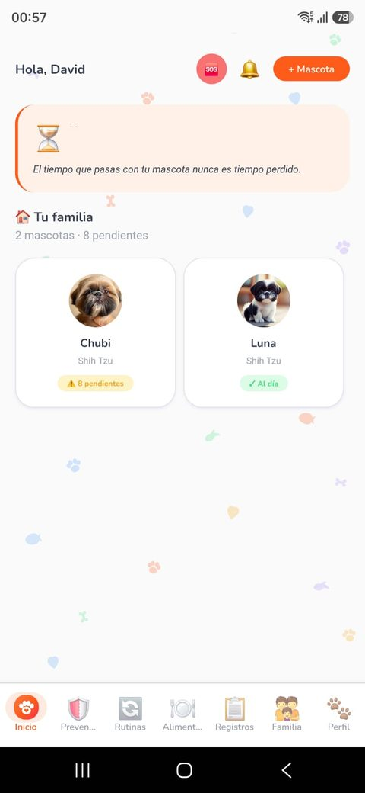
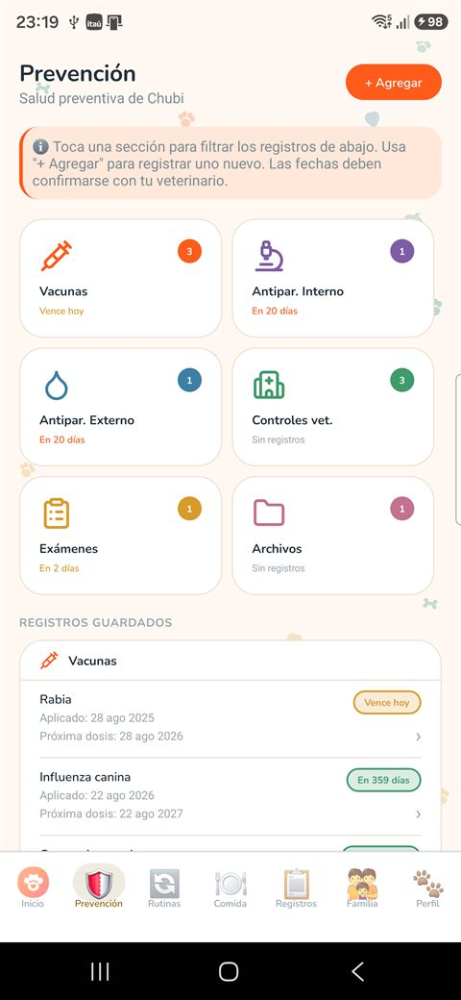
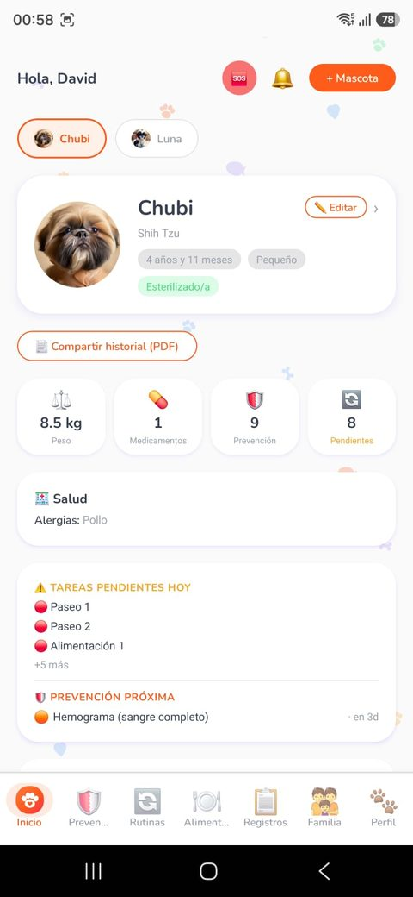
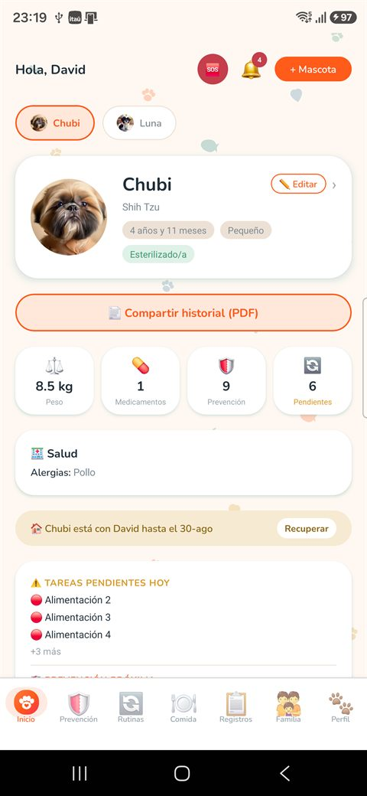
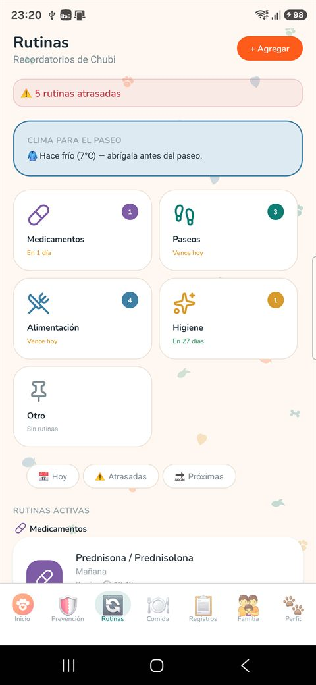

Horarios y recordatorios diarios.
¿Alguien ya alimentó a Chubi?
Rutinas, comidas y tareas del día
Toda su salud en un solo lugar
Compartido con tu familia al instante
Funciones principales
Historial, peso y consultas.
Vacunas y desparasitaciones.
Co-tutores en tiempo real.
Disponible para Android



Empezar toma cinco minutos
Tres pasos y la casa entera queda coordinada
Crea su ficha
Datos, foto, peso, alergias y su historial de salud desde el primer día.
Invita a tu gente
Un código para tu pareja, tus hijos, la abuela o quien la cuide en vacaciones.
Cuiden en equipo
Cada comida, paseo o remedio queda con nombre y hora. Sin repetir, sin olvidar.
Lo que hay dentro
Todo lo de tu mascota, en orden
Las mismas secciones que verás en la app, cada una con su color.
Prevención
Vacunas, desparasitaciones y exámenes con aviso de la próxima dosis.
Rutinas
Remedios, paseos e higiene con recordatorios a la hora exacta.
Alimentación
Qué come y cuánto, con historial diario para notar cambios a tiempo.
Registros
Síntomas, consultas y peso en una línea de tiempo clara, con fotos y documentos adjuntos.
Historial en PDF
Su ficha completa en un archivo para llevar a la consulta o mandar por WhatsApp.
Familia
Co-tutores que ven y registran todo en tiempo real, con aviso de la actividad de cada uno. Es lo que hace distinta a Manadario.
Un recorrido rápido
Manadario en 30 segundos
Pantallas reales
Así se ve por dentro
Tus mascotas
Todas en un vistazo, con sus pendientes.

La ficha de cada una
Peso, salud, alergias y tareas del día.

Rutinas que avisan
Remedios, paseos y comidas a su hora.
Una mascota no tiene un cuidador. Tiene una manada.
Otras apps guardan el carnet. Manadario coordina a las personas que lo llenan.
Co-tutores que ven y registran en tiempo real
Aviso al instante cuando alguien completa una tarea
Notas entre tutores: “quedó con poco alimento”
Cada registro con nombre y hora
Pensado para vacaciones y cuidadores temporales
Empieza hoy, es gratis
Crea la ficha de tu mascota, invita a tu gente y dejen de preguntarse quién hizo qué.
Próximamente en Google Play